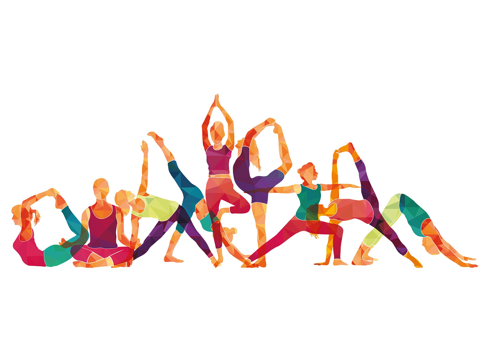

AA06: Computer Vision Based AI For Human Pose Detection
This is a student project that identifies a yoga pose being performed by a person.
Authors: Soumya Chaudhari, Dimple Gamnani, Vatsal Shreekant & Vincent Yeung

Choose Pose
About us